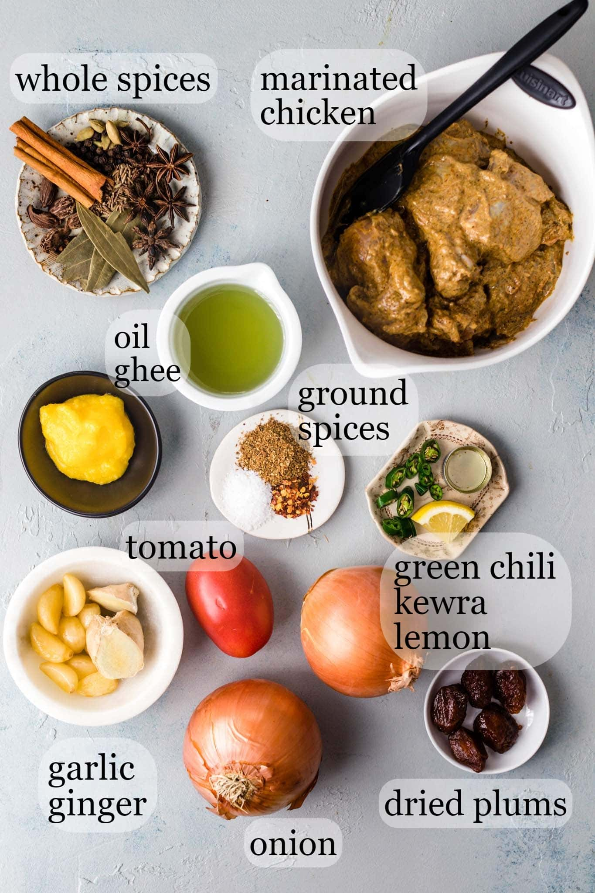
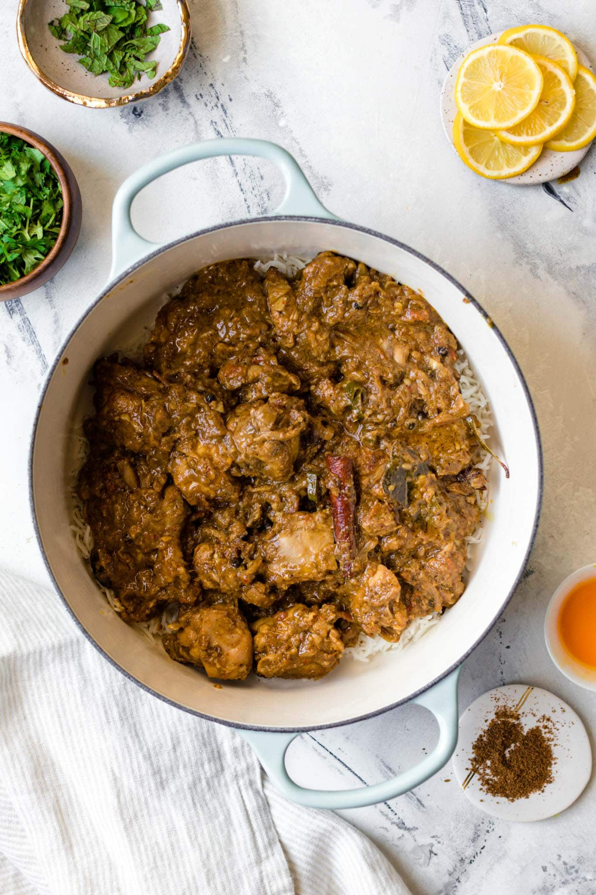

CHICKEN BIRYANI RECIPE
Behold! An authentic Chicken Biryani recipe with simple, easy-to-follow instructions (no curveballs!) and mouthwatering, traditional Pakistani and Indian flavor. This recipe includes tips on how to get fluffy rice, tender chicken, and the distinct biryani taste. Tested to perfection!
t took me absolutely no effort to bring you this biryani recipe. All I had to do was find the best biryani in Houston, dissect it, hound poor Rizwan for details, perform 10+ trials, use the concepts in Salt Acid Fat Heat to further perfect it, survey my email list for preferences, interpolate to figure out spice quantities, and you know…cry a little.
In short, I literally ate, slept, and breathed biryani until I could proudly publish this most-beloved, highly requested recipe and do it justice. Phew. Lets do this.
what is biryani
Biryani is an intricate rice dish made with layers of curried meat and rice. Given its use of adornments and luxurious finishes, its no surprise that biryani has roots in Persian cuisine.
There are two main methods of making biryani:
- Kachi (raw) biryani, made with raw meat and parboiled rice and cooked together
- Pakki (cooked) biryani, in which cooked meat and parboiled rice are steamed together.
In Pakistan, pakki (or cooked) biryani is most common, with several prominent varieties such as Sindhi, Karachi-style, and Bombay biryani. This recipe is an amalgamation of these styles and is similar to what youd find at a typical Pakistani or Indian restaurant or dinner party.
Ingredients for Chicken Biryani

- Oil/Ghee: I ve used oil for fluidity and ghee for taste.
- Onions: You can either thinly slice them (more traditional) or finely chop. If using a food processor to do this, pulse to chop so that it doesn t blend into a paste.
- Whole spices: A generous amount of whole spices are a distinct characteristic of biryani. Of course, whole spices are meant to be discarded while eating. If you find them too much, you can always reduce the amount or place them in a spice/muslin bag.
- Bone-in, cut up, skinless chicken: I buy pre-cut up pieces of a whole chicken, but bone-in, skinless chicken thighs work too.
- Garlic + Ginger: I use a mortar and pestle or a food processor to crush them.Tomatoes: Since biryani has lots of sour ingredients like yogurt, dried plums (alu Bukhara), and lemon, I ve found keeping the tomatoes to a minimum gives it just the right amount of tang.
- Tomatoes: Since biryani has lots of sour ingredients like yogurt, dried plums (alu Bukhara), and lemon, I ve found keeping the tomatoes to a minimum gives it just the right amount of tang.
- Yogurt: Not only does a yogurt marinade make the chicken more tender and flavorful, but it also makes cooking the chicken much smoother. For a dairy-free option, try using coconut milk.
- Rice: I suggest using aged, long-grain basmati rice you can find at some grocery stores, any Indian/Pakistani specialty store, or online.
- Dried Plums (Alu Bukhara): I always go for the helping of biryani with these sweet surprises. Alu Bukhara are often used in biryani to give a sweet, tangy taste. They re usually available at South Asian grocery stores, but if you can t find them, you can either substitute with dried prunes or omit.
3 Main Steps
- Prepare the chicken curry. Prepare the biryani masala (or use store-bought) and marinate the chicken. Start the chicken curry. While the chicken cooks over low heat, make the rice.

- Prepare the rice. Bring a pot of water to a boil and parboil the rice. Drain and set aside.

- Bring it all together for a final steam (dum). Layer half of the rice, all of the chicken, and then the remaining rice on top. Add the finishing touches. Allow steam to develop, then lower the heat and let the flavors meld.



instructions
- In a medium bowl, combine the chicken with the ingredients listed under marinade . Cover and set aside or refrigerate (ideally) up to overnight. When ready to use, allow the chicken to come to room temperature.
Thoroughly wash the rice and soak it in water. Set aside.
- Heat a large, heavy bottomed pan over high heat. Add the oil, ghee, and onions and sauté until the onions are golden (~15-20 minutes). Deglaze the pan with ¼ cup water. Once the water dries up, add the whole spices, garlic, and ginger and sauté for another 2 minutes.
- Add the chicken with its marinade and sauté until it changes color (~2-3 minutes). Add the tomatoes, green chili pepper, and dried plum (alu bukhara) and stir to coat. Add ½ cup water (the water should cover about 1/3 of the chicken) and bring to a gentle boil.
- Turn the heat down to a gentle simmer (this is low heat on my stovetop), cover, and allow the chicken to cook for 30 minutes, stirring midway. While the chicken is cooking, proceed to the next step. Turn off the heat once the chicken has cooked.
- Meanwhile, prepare the rice. Place a medium pot over high heat and bring 7 cups (1.75 quarts) of water to a boil (See Tip). Add salt, oil, and lemon juice/vinegar and stir. Once the water comes to a boil, drain and add the rice. Stir, and bring it back up to a boil. Once it comes to a boil again, boil for 5 minutes (no more than 5 minutes and 30 seconds), or until the rice is just cooked with a bite to it. It shouldn t get mushy when pressed between your fingers. (See Note 1) Drain and set aside.
- Uncover the chicken. Raise the heat to medium-high to sauté out any excess water for 2-3 minutes. Add salt, garam masala, and red chili flakes for more heat (if desired). The oil will have separated from the masala. Turn off the heat. Add kewra water and lemon juice and stir to combine.
- Steaming ('Dum') See Post for Oven Steaming Method
If needed, lightly oil the bottom of a dutch oven or stock/soup pot. Layer half of the drained rice. Sprinkle 1/4 tsp of the chaat/garam masala on top of the rice. Add in all the chicken, and top with remaining rice.
- Sprinkle the remaining 1/4 tsp of chaat/garam masala. Drizzle in the colored milk and oil. (Optional: Sprinkle a pinch of food coloring directly for more variation in color.) Sprinkle the cilantro leaves and mint leaves, and arrange the lemon slices on top.
- If your pan isn t heavy bottomed, place a heat diffuser, flat griddle, or tava underneath the pan to diffuse the heat. Layer the lid with a kitchen cloth (or aluminum foil) and seal tightly. The goal is to keep as much of the steam inside as possible. Turn on the heat to medium and allow the biryani to develop steam for 4-5 minutes.
- You ll be able to feel the steam starting to escape the sides. Then turn down to the lowest heat and allow it to cook in its steam (dum) for 20 minutes. Turn off the heat and allow the biryani to rest with the lid on for 10 minutes. Do not stir or mix. To serve, gently move on to platter with rice paddle or small plate. Serve hot with yogurt or raita...
CONTACT US ON WHAT'S UP.
LINKED.IN ACCOUNT
GITHUB ACCOUNT